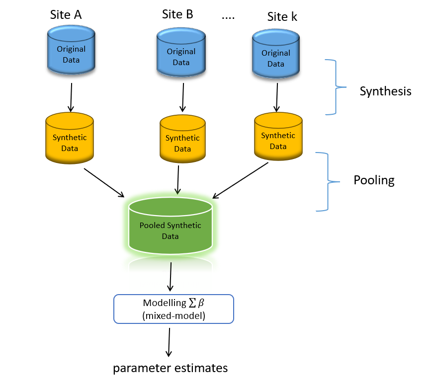
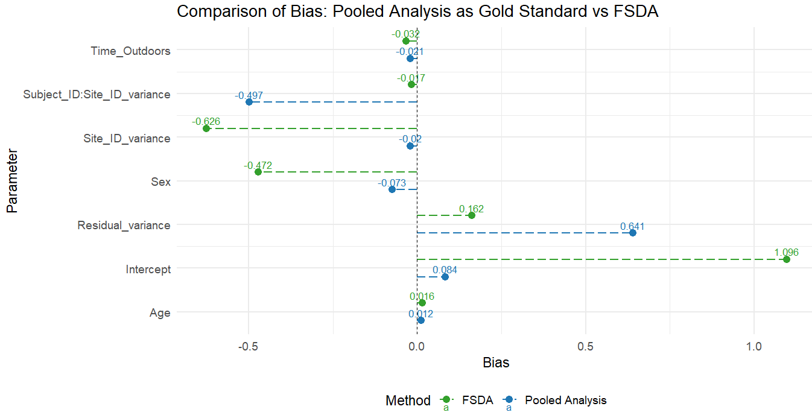
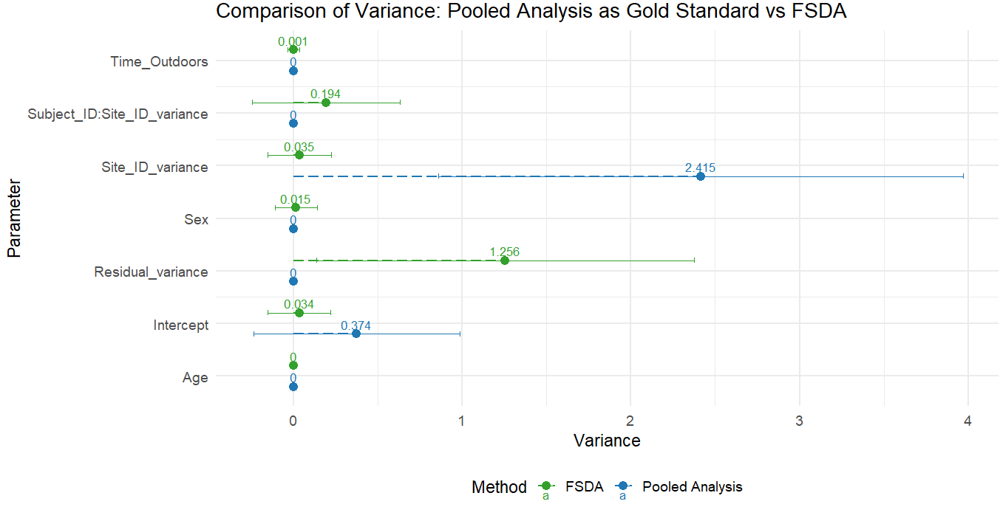
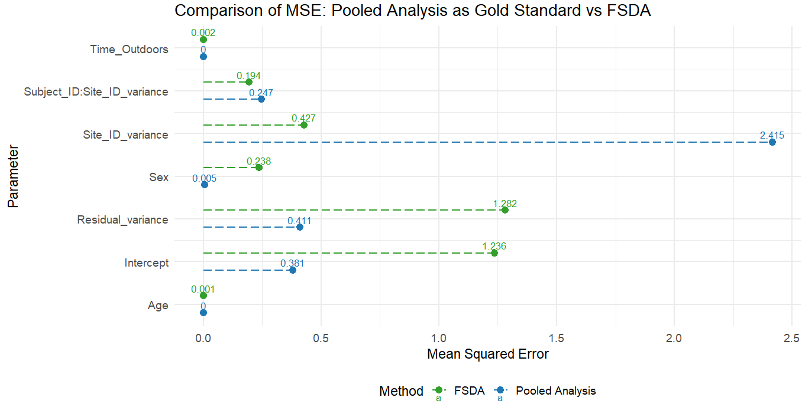

Federated Synthetic Data Analysis
Master’s Thesis • University of Bremen • R • Stan • Simulation Study
Download Thesis PDF GitHub RepoOverview
This study investigates federated synthetic data analysis as a privacy-preserving approach for statistical modelling in multi-site healthcare research.
Problem Statement
Healthcare data sharing is often restricted due to privacy regulations. Traditional pooled analysis may not be feasible across institutions. This thesis explores synthetic data generation combined with federated modelling as an alternative approach.
Research Objectives
- Evaluate bias and variance of federated synthetic data models
- Assess statistical utility across multiple simulated sites
- Compare performance under varying sample sizes
- Quantify disclosure risk vs analytical validity
Methodology
A Monte Carlo simulation framework was implemented using mixed-effects models. Data were generated across multiple sites with heterogeneity in covariate distributions. Synthetic datasets were created using the synthpop framework.
A hierarchical mixed-effects model was then fitted:
Y_ij = β0 + β1 X_ij + u_j + ε_ij
u_j ~ N(0, σ²_site)
ε_ij ~ N(0, σ²)
Simulation Design

Analysis Workflow
Original Data
↓
Site-level Splitting
↓
Synthetic Data Generation
↓
Mixed-Effects Model Fitting
↓
Pooling of Estimates
↓
Performance Evaluation
(Bias | Variance | MSE | Coverage | Utility)
Federated Synthetic Data Analysis Workflow

Key Results
- Low bias observed in fixed effects across scenarios
- Variance increased with higher heterogeneity between sites
- Coverage remained stable under moderate sample sizes
- Trade-off identified between privacy and statistical utility
Key Results



Key Contributions
- Designed a scalable Monte Carlo simulation framework
- Implemented federated synthetic data pipeline in R
- Evaluated mixed-effects models under privacy constraints
- Compared utility vs disclosure risk trade-offs
Limitations
- Simplified assumption of linear mixed-effects structure
- No longitudinal dependency structure included
- Limited real-world validation beyond simulation